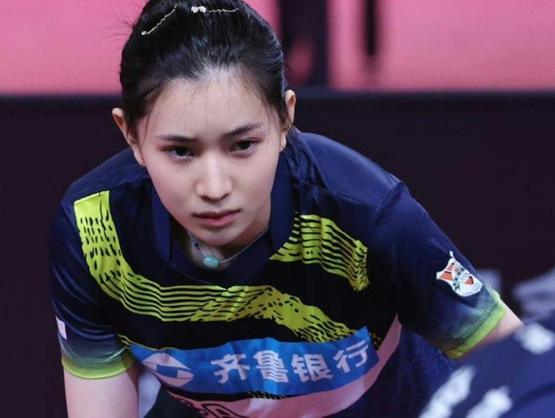
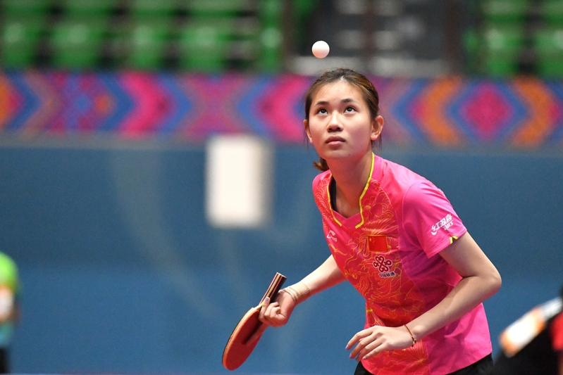

在本届巴黎奥运，中国队的乒乓球选手孙颖莎夺得了女子单打银牌以及混双项目的金牌。但有眼尖的网友注意到，孙颖莎有一位超高颜值的陪练员，并将她封为中国乒乓球界的刘亦菲。
中国青年报报导，这位陪练员叫王添艺，出生于2002年，是本届中国女子乒乓球队的四位陪练中最年轻的。她在团队中的主要任务，就是与钱天一、石洵瑶、何卓佳这三位陪练员一起，模仿他国选手的打法，让参赛选手练习对打。
生于山东济南一个普通家庭的王添艺，从小身体瘦弱，因陪哥哥练球而喜欢上了乒乓球，在教练的慧眼栽培下，王添艺2012年10岁时进入山东鲁能队，曾获青少年锦标赛亚军，在2016年她进入中国国家队。
王添艺虽然年轻，但是实力不可小觑。据报导，进入中国国家队后，她在2019年的意大利青少年公开赛获得混双冠军，还曾经在2023年与刘丁硕搭档，在中国的乒乓球全国锦标赛16强赛中击败过由王楚钦和孙颖莎组成的头号种子组合。也在2023年12月的WTT支线赛杜塞道夫站，与何卓佳搭档斩获女双金牌。
身高176公分，王添艺不仅身材高䠷，面貌更是清秀，不少人都称赞她神似明星刘亦菲，甚至还有媒体形容她「漂亮得不像实力派」，简直是李若彤+高圆圆+全智贤+袁咏仪的合体。
